Last updated: 2019-02-25
workflowr checks: (Click a bullet for more information) ✔ R Markdown file: up-to-date
Great! Since the R Markdown file has been committed to the Git repository, you know the exact version of the code that produced these results.
✔ Environment: empty
Great job! The global environment was empty. Objects defined in the global environment can affect the analysis in your R Markdown file in unknown ways. For reproduciblity it’s best to always run the code in an empty environment.
✔ Seed:
set.seed(20180714)
The command set.seed(20180714) was run prior to running the code in the R Markdown file. Setting a seed ensures that any results that rely on randomness, e.g. subsampling or permutations, are reproducible.
✔ Session information: recorded
Great job! Recording the operating system, R version, and package versions is critical for reproducibility.
✔ Repository version: 4693348
wflow_publish or wflow_git_commit). workflowr only checks the R Markdown file, but you know if there are other scripts or data files that it depends on. Below is the status of the Git repository when the results were generated:
Ignored files:
Ignored: .DS_Store
Ignored: .Rhistory
Ignored: .Rproj.user/
Ignored: data/.DS_Store
Ignored: docs/.DS_Store
Ignored: docs/figure/.DS_Store
Untracked files:
Untracked: analysis/gd_notes.Rmd
Untracked: analysis/trachea3.Rmd
Untracked: code/count_sim.R
Untracked: code/pathways.R
Untracked: code/trachea3.R
Untracked: data/lowrank/
Untracked: data/tmp14.rds
Untracked: data/tmpdata.rds
Untracked: data/tmplfsr.rds
Untracked: data/trachea3/
Untracked: docs/figure/count_notes.Rmd/
Untracked: docs/figure/trachea3.Rmd/
Unstaged changes:
Deleted: data/before_bad.Rdata
| File | Version | Author | Date | Message |
|---|---|---|---|---|
| html | f2b86c1 | Jason Willwerscheid | 2018-12-05 | Build site. |
| Rmd | a89c222 | Jason Willwerscheid | 2018-12-05 | wflow_publish(“analysis/trachea.Rmd”) |
| html | 8327d75 | Jason Willwerscheid | 2018-10-23 | Build site. |
| Rmd | 28891d1 | Jason Willwerscheid | 2018-10-23 | workflowr::wflow_publish(“analysis/trachea.Rmd”) |
I fit 30 factors to the drop-seq dataset discussed in Montoro et al. I removed all genes with zero total counts and did a log1p transform of the counts. I used nonnegative priors for gene loadings and normal-mixture priors for cell loadings.
# Add 30 factors with rough backfits after every 5 factors.
fl <- flashier(data, greedy.Kmax = 30, var.type = 1,
prior.type = c("nonnegative", "normal.mix"),
ash.param = list(optmethod = "mixSQP"),
backfit.every = 5, final.backfit = TRUE,
backfit.order = "montaigne", warmstart.backfits = FALSE)
# Refine by backfitting.
fl <- flashier(data, flash.init = fl, backfit = "only",
backfit.order = "dropout", backfit.maxiter = 200)The following code is used to produce the boxplots and tables below.
suppressMessages({
library(ggplot2)
library(topGO)
library(org.Mm.eg.db)
})
#> Warning: package 'ggplot2' was built under R version 3.4.4
fl <- readRDS("~/Downloads/DropSeq30_backfit.rds")
# Remove large data object to free up memory.
fl$fit$Y <- NULL
# Data frame containing cell type and loadings for each factor.
PSdf <- data.frame(fl$loadings$normalized.loadings[[2]])
cell.names <- rownames(fl$loadings$normalized.loadings[[2]])
cell.types <- as.factor(sapply(strsplit(cell.names, "_"), `[`, 3))
levels(cell.types)
#> [1] "Basal" "Ciliated" "Club" "Goblet"
#> [5] "Ionocyte" "Neuroendocrine" "Tuft"
levels(cell.types) <- c("Bas", "Cil", "Clb", "Gob", "Ion", "Nec", "Tft")
PSdf$cell.type <- cell.types
# Need to select signficant genes for topGO.
# Scale gene loadings by scale constant * maximum cell loading.
s <- fl$loadings$scale.constant *
apply(abs(fl$loadings$normalized.loadings[[2]]), 2, max)
gene.loadings <- fl$loadings$normalized.loadings[[1]]
gene.loadings <- gene.loadings * rep(s, each = nrow(gene.loadings))
# Get a pseudo-t statistic by dividing by the residual SE.
gene.t <- gene.loadings * sqrt(fl$fit$tau)
# Convert to a p-value.
gene.p <- 2 * (1 - pnorm(abs(gene.t)))
# Select significant genes using Benjamini-Hochberg.
BH <- function(k, alpha = 0.01) {
pvals <- gene.p[, k]
selected <- rep(0, length(pvals))
names(selected) <- names(pvals)
n <- length(pvals)
sorted.pvals <- sort(pvals)
BH <- sorted.pvals < alpha / (n - 0:(n - 1))
cutoff <- min(which(!BH))
selected[pvals < sorted.pvals[cutoff]] <- 1
return(selected)
}
gene.sig <- sapply(1:ncol(gene.p), BH)
# How many significant genes per factor are there?
colSums(gene.sig)
#> [1] 286 512 98 74 163 183 131 198 168 541 364 365 104 558 535 499 31
#> [18] 504 406 436 3 183 0 96 448 326 361 404 45 156
# Omit factors with PVE below a certain (empirically determined) threshold.
kset <- (1:ncol(gene.p))[fl$pve > 0.0001 & colSums(gene.sig) > 9]
# I also want to see which factors contain genes mentioned in the paper.
paper.genes <- data.frame(
gene = c("Nfia", "Ascl1", "Ascl2", "Ascl3", "Foxq1", "Cdhr3", "Rgs13",
"Muc5b", "Notch2", "Il13ra1", "Krt4", "Krt13", "Krt8", "Ecm1",
"S100a11", "Cldn3", "Lgals3", "Anxa1", "Il25", "Tslp", "Alox5ap",
"Ptprc", "Pou2f3", "Gfi1b", "Spib", "Sox9", "Gp2", "Tff1",
"Tff2", "Lman1l", "P2rx4", "Muc5ac", "Dcpp1", "Dcpp2", "Dcpp3",
"Atp6v1c2", "Atp6v0d2", "Cftr", "Aqp3", "Krt5", "Dapl1", "Hspa1a",
"Trp63", "Scgb1a1", "Krt15", "Cyp2f2", "Lypd2", "Cbr2", "Foxj1",
"Ccdc153", "Ccdc113", "Mlf1", "Lztfl1", "Chga", "Dclk1"),
type = c("Club", "NEC", "Tuft", "Ion", "Goblet", "Cil", "Tuft",
"Club", "Club", "Club", "Hill", "Hill", "Basal", "Hill",
"Hill", "Hill", "Hill", "Hill", "Tuft", "Tuft", "Tuft2",
"Tuft2", "Tuft1", "Tuft2", "Tuft2", "Tuft2", "Goblet", "Gob1",
"Gob1", "Gob1", "Gob1", "Gob1", "Gob2", "Gob2", "Gob2",
"Ion", "Ion", "Ion", "BM", "BM", "BM", "BM",
"BM", "ClbM", "ClbM", "ClbM", "ClbM", "ClbM", "CilM",
"CilM", "CilM", "CilM", "CilM", "NECM", "TftM"))
paper.genes$gene <- as.character(paper.genes$gene)
levels(paper.genes$type) <- c("Basal", "Basal (Marker)", "Ciliated",
"Ciliated (Marker)", "Club (Marker)", "Club",
"Goblet-1", "Goblet-2", "Goblet", "Hillock",
"Ionocyte", "NEC", "NEC (Marker)",
"Tuft (Marker)", "Tuft", "Tuft-1", "Tuft-2")
# Set up topGOdata object.
GO.list <- as.factor(gene.sig[, 1])
GOdata <- new("topGOdata", ontology = "BP", allGenes = GO.list,
annot = annFUN.org, mapping = "org.Mm.eg", ID = "symbol")
#>
#> Building most specific GOs .....
#> ( 11286 GO terms found. )
#>
#> Build GO DAG topology ..........
#> ( 15215 GO terms and 35696 relations. )
#>
#> Annotating nodes ...............
#> ( 15591 genes annotated to the GO terms. )# Loop over kset.
for (k in kset) {
cat(paste0("## Factor ", k, " (PVE: ",
formatC(fl$pve[k], format = "f", digits = 4), ")\n"))
fctr <- paste0("X", k)
plot(ggplot(PSdf, aes_string(x = "cell.type", y = fctr)) +
geom_boxplot(outlier.shape = NA, color = "red") +
geom_jitter(position = position_jitter(0.2), cex = 0.1) +
labs(x = "Cell Type", y = paste("Factor", k, "value")))
cat("\n")
mentions <- which(gene.sig[paper.genes$gene, k] == 1)
if (length(mentions) > 0) {
mentions.df <- paper.genes[mentions, ]
mentions.df$t.val <- gene.t[names(mentions), k]
cat("Significant genes that are also mentioned in the paper:\n")
print(knitr::kable(mentions.df))
cat("\n")
}
cat("Gene Ontology terms:\n")
GOdata@allScores <- as.factor(gene.sig[, k])
result <- suppressMessages(
runTest(GOdata, algorithm = "classic", statistic = "fisher")
)
allRes <- GenTable(GOdata, classic = result, topNodes = 10)
print(knitr::kable(allRes))
cat("\n")
}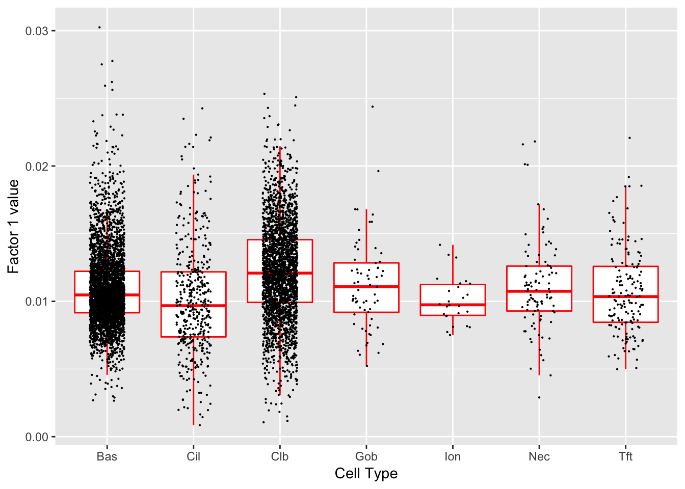
| Version | Author | Date |
|---|---|---|
| f2b86c1 | Jason Willwerscheid | 2018-12-05 |
Significant genes that are also mentioned in the paper:
| gene | type | t.val | |
|---|---|---|---|
| 13 | Krt8 | Basal | 7.242263 |
| 15 | S100a11 | Hillock | 17.425570 |
| 16 | Cldn3 | Hillock | 7.228331 |
| 17 | Lgals3 | Hillock | 10.231025 |
| 18 | Anxa1 | Hillock | 11.827277 |
| 39 | Aqp3 | Basal (Marker) | 7.943683 |
| 42 | Hspa1a | Basal (Marker) | 5.491426 |
| 44 | Scgb1a1 | Club (Marker) | 9.262051 |
| 45 | Krt15 | Club (Marker) | 11.714101 |
| 46 | Cyp2f2 | Club (Marker) | 27.970810 |
| 47 | Lypd2 | Club (Marker) | 11.379180 |
| 48 | Cbr2 | Club (Marker) | 16.672470 |
Gene Ontology terms:
| GO.ID | Term | Annotated | Significant | Expected | classic |
|---|---|---|---|---|---|
| GO:0006518 | peptide metabolic process | 682 | 54 | 11.20 | 1.6e-22 |
| GO:0006412 | translation | 539 | 46 | 8.85 | 1.7e-20 |
| GO:0043043 | peptide biosynthetic process | 560 | 46 | 9.20 | 8.0e-20 |
| GO:0043603 | cellular amide metabolic process | 802 | 54 | 13.17 | 2.8e-19 |
| GO:0043604 | amide biosynthetic process | 626 | 46 | 10.28 | 6.6e-18 |
| GO:1901566 | organonitrogen compound biosynthetic pro… | 1386 | 68 | 22.76 | 6.4e-17 |
| GO:0002181 | cytoplasmic translation | 60 | 14 | 0.99 | 6.4e-13 |
| GO:0046034 | ATP metabolic process | 191 | 21 | 3.14 | 6.1e-12 |
| GO:0009205 | purine ribonucleoside triphosphate metab… | 213 | 21 | 3.50 | 4.9e-11 |
| GO:0009126 | purine nucleoside monophosphate metaboli… | 216 | 21 | 3.55 | 6.4e-11 |
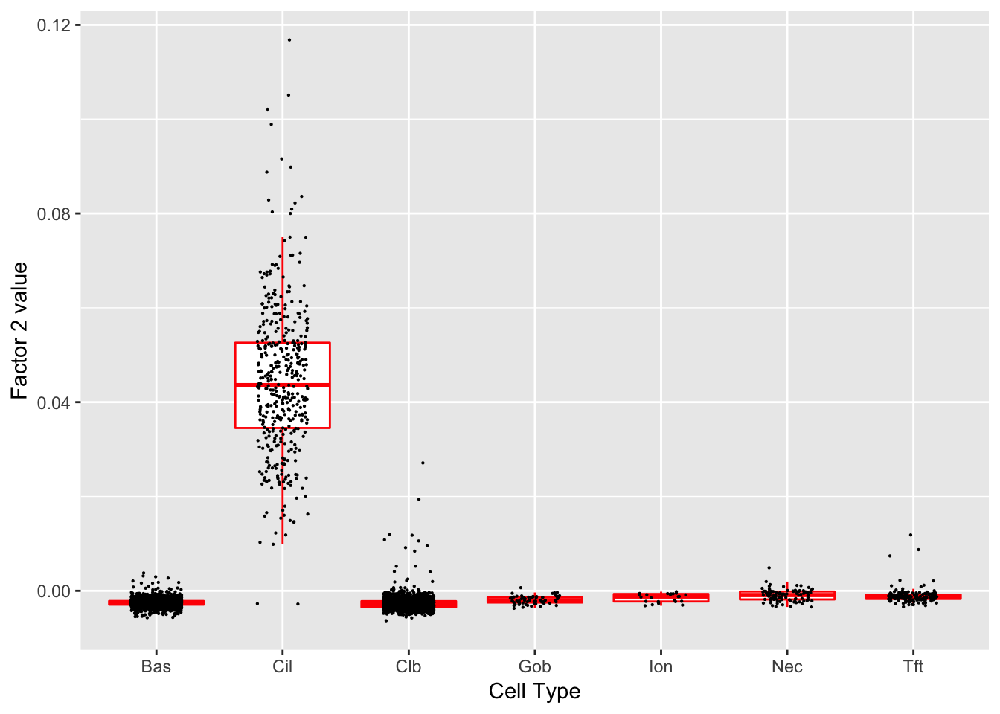
| Version | Author | Date |
|---|---|---|
| f2b86c1 | Jason Willwerscheid | 2018-12-05 |
Significant genes that are also mentioned in the paper:
| gene | type | t.val | |
|---|---|---|---|
| 6 | Cdhr3 | Ciliated | 14.432419 |
| 13 | Krt8 | Basal | 7.915175 |
| 15 | S100a11 | Hillock | 8.134064 |
| 16 | Cldn3 | Hillock | 8.365458 |
| 17 | Lgals3 | Hillock | 6.710951 |
| 18 | Anxa1 | Hillock | 8.197110 |
| 42 | Hspa1a | Basal (Marker) | 5.422251 |
| 46 | Cyp2f2 | Club (Marker) | 9.230342 |
| 48 | Cbr2 | Club (Marker) | 6.684108 |
| 49 | Foxj1 | Ciliated (Marker) | 14.103074 |
| 50 | Ccdc153 | Ciliated (Marker) | 33.342495 |
| 51 | Ccdc113 | Ciliated (Marker) | 20.003698 |
| 52 | Mlf1 | Ciliated (Marker) | 20.536544 |
Gene Ontology terms:
| GO.ID | Term | Annotated | Significant | Expected | classic |
|---|---|---|---|---|---|
| GO:0003341 | cilium movement | 68 | 38 | 1.92 | < 1e-30 |
| GO:0044782 | cilium organization | 283 | 65 | 8.00 | < 1e-30 |
| GO:0060271 | cilium assembly | 265 | 60 | 7.50 | < 1e-30 |
| GO:0007018 | microtubule-based movement | 242 | 53 | 6.85 | < 1e-30 |
| GO:0035082 | axoneme assembly | 56 | 29 | 1.58 | 1.8e-30 |
| GO:0120031 | plasma membrane bounded cell projection … | 432 | 65 | 12.22 | 3.6e-29 |
| GO:0030031 | cell projection assembly | 439 | 65 | 12.42 | 9.3e-29 |
| GO:0001578 | microtubule bundle formation | 84 | 30 | 2.38 | 1.8e-25 |
| GO:0007017 | microtubule-based process | 630 | 73 | 17.82 | 1.9e-25 |
| GO:0070925 | organelle assembly | 650 | 68 | 18.39 | 3.5e-21 |
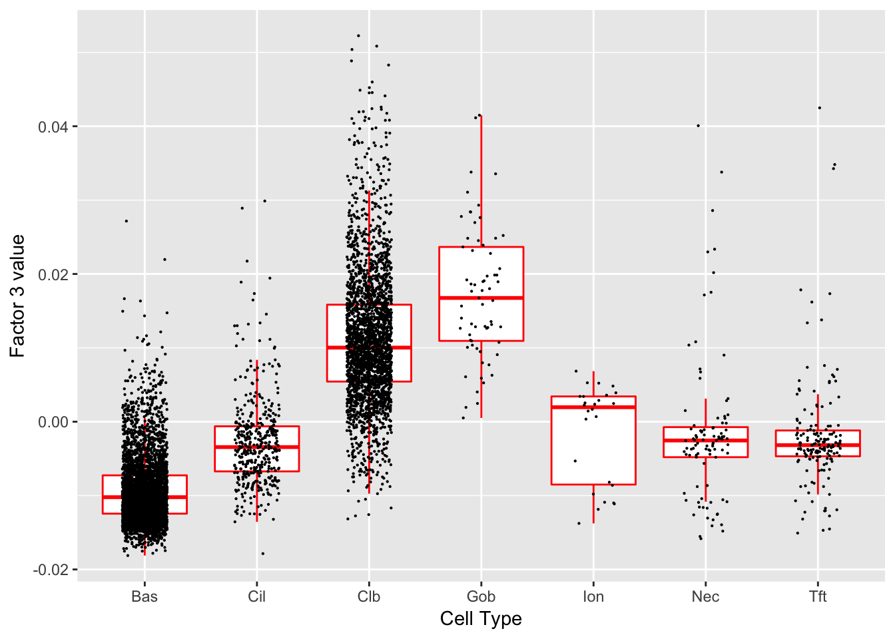
| Version | Author | Date |
|---|---|---|
| f2b86c1 | Jason Willwerscheid | 2018-12-05 |
Significant genes that are also mentioned in the paper:
| gene | type | t.val | |
|---|---|---|---|
| 13 | Krt8 | Basal | 5.067801 |
| 16 | Cldn3 | Hillock | 6.660415 |
| 44 | Scgb1a1 | Club (Marker) | 6.303162 |
| 46 | Cyp2f2 | Club (Marker) | 7.803280 |
| 47 | Lypd2 | Club (Marker) | 5.961594 |
| 48 | Cbr2 | Club (Marker) | 5.262580 |
Gene Ontology terms:
| GO.ID | Term | Annotated | Significant | Expected | classic |
|---|---|---|---|---|---|
| GO:0043618 | regulation of transcription from RNA pol… | 44 | 6 | 0.24 | 1.4e-07 |
| GO:0043620 | regulation of DNA-templated transcriptio… | 48 | 6 | 0.26 | 2.4e-07 |
| GO:0035914 | skeletal muscle cell differentiation | 59 | 6 | 0.33 | 8.4e-07 |
| GO:0050896 | response to stimulus | 6040 | 55 | 33.32 | 1.9e-06 |
| GO:0019730 | antimicrobial humoral response | 41 | 5 | 0.23 | 2.9e-06 |
| GO:0007519 | skeletal muscle tissue development | 139 | 7 | 0.77 | 1.1e-05 |
| GO:0009888 | tissue development | 1492 | 22 | 8.23 | 1.4e-05 |
| GO:0060538 | skeletal muscle organ development | 144 | 7 | 0.79 | 1.4e-05 |
| GO:0035821 | modification of morphology or physiology… | 96 | 6 | 0.53 | 1.5e-05 |
| GO:0046686 | response to cadmium ion | 28 | 4 | 0.15 | 1.6e-05 |
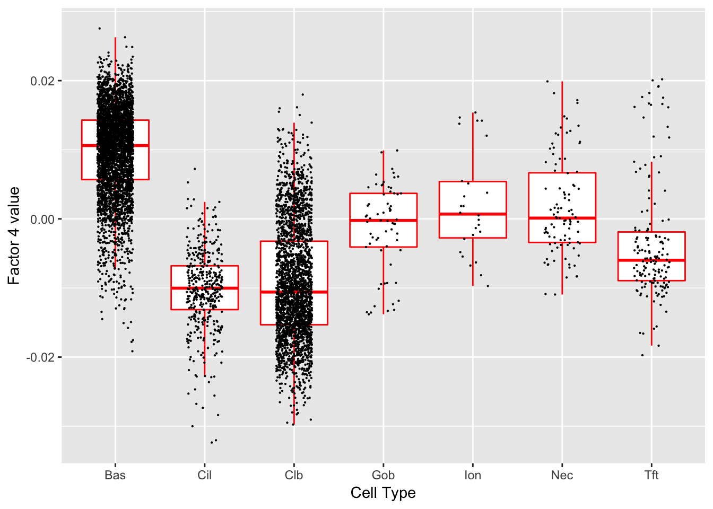
| Version | Author | Date |
|---|---|---|
| f2b86c1 | Jason Willwerscheid | 2018-12-05 |
Significant genes that are also mentioned in the paper:
| gene | type | t.val | |
|---|---|---|---|
| 39 | Aqp3 | Basal (Marker) | 5.969027 |
| 42 | Hspa1a | Basal (Marker) | 6.596314 |
| 46 | Cyp2f2 | Club (Marker) | 6.806845 |
Gene Ontology terms:
| GO.ID | Term | Annotated | Significant | Expected | classic |
|---|---|---|---|---|---|
| GO:0043618 | regulation of transcription from RNA pol… | 44 | 4 | 0.17 | 2.6e-05 |
| GO:0010941 | regulation of cell death | 1472 | 17 | 5.76 | 3.3e-05 |
| GO:0043620 | regulation of DNA-templated transcriptio… | 48 | 4 | 0.19 | 3.6e-05 |
| GO:0000028 | ribosomal small subunit assembly | 19 | 3 | 0.07 | 5.3e-05 |
| GO:0035914 | skeletal muscle cell differentiation | 59 | 4 | 0.23 | 8.2e-05 |
| GO:0009612 | response to mechanical stimulus | 119 | 5 | 0.47 | 0.00010 |
| GO:0043604 | amide biosynthetic process | 626 | 10 | 2.45 | 0.00014 |
| GO:0021761 | limbic system development | 70 | 4 | 0.27 | 0.00016 |
| GO:0050896 | response to stimulus | 6040 | 38 | 23.63 | 0.00016 |
| GO:0007519 | skeletal muscle tissue development | 139 | 5 | 0.54 | 0.00021 |
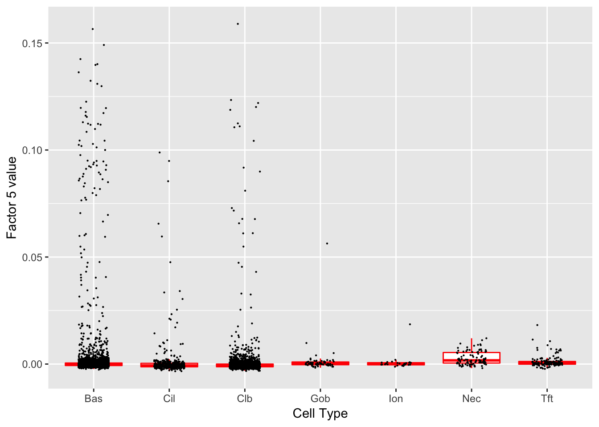
| Version | Author | Date |
|---|---|---|
| f2b86c1 | Jason Willwerscheid | 2018-12-05 |
Gene Ontology terms:
| GO.ID | Term | Annotated | Significant | Expected | classic |
|---|---|---|---|---|---|
| GO:0051301 | cell division | 512 | 60 | 4.56 | < 1e-30 |
| GO:0007049 | cell cycle | 1426 | 80 | 12.71 | < 1e-30 |
| GO:1903047 | mitotic cell cycle process | 553 | 56 | 4.93 | < 1e-30 |
| GO:0022402 | cell cycle process | 912 | 66 | 8.13 | < 1e-30 |
| GO:0000278 | mitotic cell cycle | 714 | 60 | 6.37 | < 1e-30 |
| GO:0007059 | chromosome segregation | 275 | 43 | 2.45 | < 1e-30 |
| GO:0140014 | mitotic nuclear division | 222 | 33 | 1.98 | < 1e-30 |
| GO:0000280 | nuclear division | 341 | 38 | 3.04 | < 1e-30 |
| GO:0098813 | nuclear chromosome segregation | 212 | 32 | 1.89 | 1.5e-30 |
| GO:0048285 | organelle fission | 386 | 38 | 3.44 | 3.0e-29 |
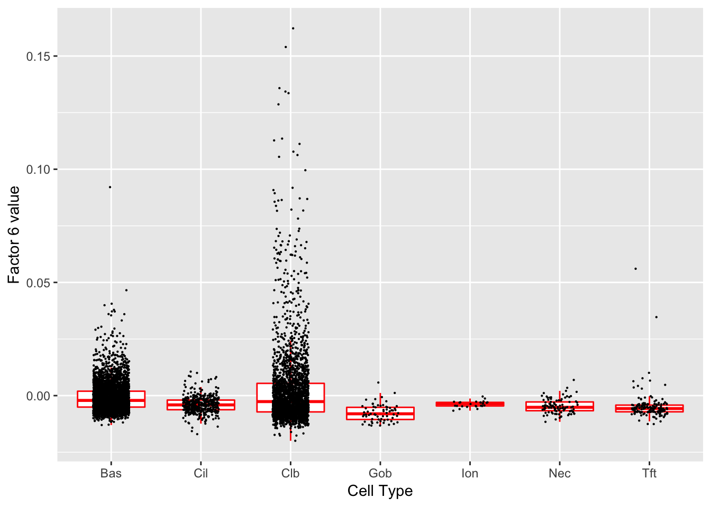
| Version | Author | Date |
|---|---|---|
| f2b86c1 | Jason Willwerscheid | 2018-12-05 |
Significant genes that are also mentioned in the paper:
| gene | type | t.val | |
|---|---|---|---|
| 11 | Krt4 | Hillock | 14.016113 |
| 12 | Krt13 | Hillock | 15.089416 |
| 13 | Krt8 | Basal | 7.489441 |
| 14 | Ecm1 | Hillock | 16.277826 |
| 15 | S100a11 | Hillock | 12.758571 |
| 16 | Cldn3 | Hillock | 9.570576 |
| 17 | Lgals3 | Hillock | 16.290688 |
| 18 | Anxa1 | Hillock | 17.406668 |
| 39 | Aqp3 | Basal (Marker) | 10.049004 |
| 45 | Krt15 | Club (Marker) | 10.647146 |
| 46 | Cyp2f2 | Club (Marker) | 9.785778 |
| 48 | Cbr2 | Club (Marker) | 5.267489 |
Gene Ontology terms:
| GO.ID | Term | Annotated | Significant | Expected | classic |
|---|---|---|---|---|---|
| GO:0031579 | membrane raft organization | 22 | 6 | 0.23 | 8.3e-08 |
| GO:0031424 | keratinization | 24 | 6 | 0.25 | 1.5e-07 |
| GO:0007162 | negative regulation of cell adhesion | 224 | 13 | 2.37 | 7.6e-07 |
| GO:0001765 | membrane raft assembly | 10 | 4 | 0.11 | 2.4e-06 |
| GO:0022610 | biological adhesion | 1075 | 29 | 11.38 | 2.7e-06 |
| GO:0022408 | negative regulation of cell-cell adhesio… | 146 | 10 | 1.55 | 3.4e-06 |
| GO:0098609 | cell-cell adhesion | 594 | 20 | 6.29 | 4.8e-06 |
| GO:0071709 | membrane assembly | 25 | 5 | 0.26 | 5.6e-06 |
| GO:0007155 | cell adhesion | 1064 | 28 | 11.26 | 6.6e-06 |
| GO:0030216 | keratinocyte differentiation | 97 | 8 | 1.03 | 8.6e-06 |
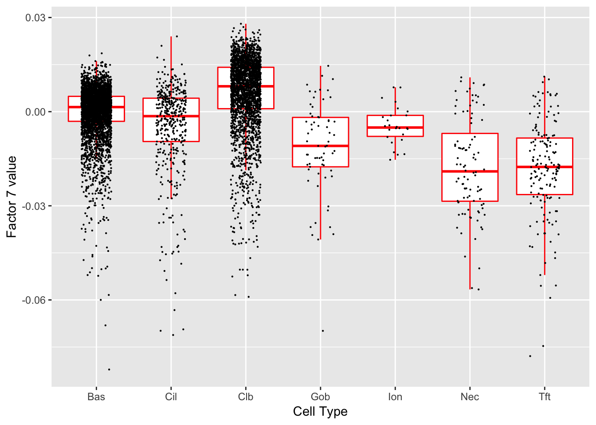
| Version | Author | Date |
|---|---|---|
| f2b86c1 | Jason Willwerscheid | 2018-12-05 |
Significant genes that are also mentioned in the paper:
| gene | type | t.val | |
|---|---|---|---|
| 15 | S100a11 | Hillock | 10.231936 |
| 16 | Cldn3 | Hillock | 6.118989 |
| 17 | Lgals3 | Hillock | 6.959122 |
| 18 | Anxa1 | Hillock | 7.969162 |
| 44 | Scgb1a1 | Club (Marker) | 9.736032 |
| 45 | Krt15 | Club (Marker) | 7.180916 |
| 46 | Cyp2f2 | Club (Marker) | 20.148326 |
| 47 | Lypd2 | Club (Marker) | 8.531190 |
| 48 | Cbr2 | Club (Marker) | 11.853278 |
Gene Ontology terms:
| GO.ID | Term | Annotated | Significant | Expected | classic |
|---|---|---|---|---|---|
| GO:0006518 | peptide metabolic process | 682 | 19 | 4.86 | 3.1e-07 |
| GO:0019730 | antimicrobial humoral response | 41 | 6 | 0.29 | 4.2e-07 |
| GO:0006412 | translation | 539 | 16 | 3.84 | 1.3e-06 |
| GO:0043043 | peptide biosynthetic process | 560 | 16 | 3.99 | 2.1e-06 |
| GO:0043603 | cellular amide metabolic process | 802 | 19 | 5.71 | 3.5e-06 |
| GO:0002181 | cytoplasmic translation | 60 | 6 | 0.43 | 4.2e-06 |
| GO:0000028 | ribosomal small subunit assembly | 19 | 4 | 0.14 | 8.7e-06 |
| GO:0043604 | amide biosynthetic process | 626 | 16 | 4.46 | 8.9e-06 |
| GO:0042221 | response to chemical | 2842 | 39 | 20.23 | 1.6e-05 |
| GO:0006880 | intracellular sequestering of iron ion | 2 | 2 | 0.01 | 5.0e-05 |
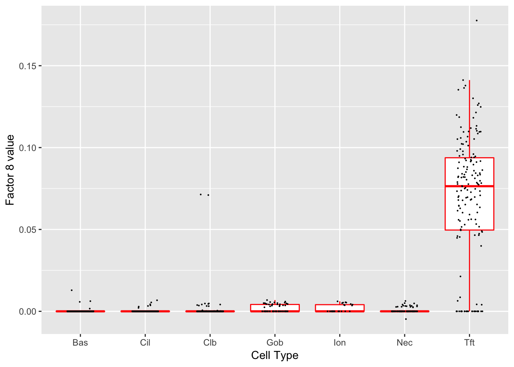
| Version | Author | Date |
|---|---|---|
| f2b86c1 | Jason Willwerscheid | 2018-12-05 |
Significant genes that are also mentioned in the paper:
| gene | type | t.val | |
|---|---|---|---|
| 7 | Rgs13 | Tuft | 24.955241 |
| 13 | Krt8 | Basal | 7.649654 |
| 18 | Anxa1 | Hillock | 5.991935 |
| 19 | Il25 | Tuft | 8.547482 |
| 21 | Alox5ap | Tuft-2 | 16.380566 |
| 23 | Pou2f3 | Tuft-1 | 8.797474 |
| 25 | Spib | Tuft-2 | 13.945543 |
| 26 | Sox9 | Tuft-2 | 9.185370 |
| 44 | Scgb1a1 | Club (Marker) | 5.237961 |
| 55 | Dclk1 | Tuft (Marker) | 15.476724 |
Gene Ontology terms:
| GO.ID | Term | Annotated | Significant | Expected | classic |
|---|---|---|---|---|---|
| GO:0007186 | G-protein coupled receptor signaling pat… | 536 | 19 | 6.02 | 9.6e-06 |
| GO:0065007 | biological regulation | 8828 | 126 | 99.09 | 1.8e-05 |
| GO:0021979 | hypothalamus cell differentiation | 6 | 3 | 0.07 | 2.7e-05 |
| GO:0050896 | response to stimulus | 6040 | 94 | 67.80 | 3.8e-05 |
| GO:0006518 | peptide metabolic process | 682 | 20 | 7.66 | 8.2e-05 |
| GO:0043603 | cellular amide metabolic process | 802 | 22 | 9.00 | 9.5e-05 |
| GO:0019370 | leukotriene biosynthetic process | 9 | 3 | 0.10 | 0.00011 |
| GO:0006880 | intracellular sequestering of iron ion | 2 | 2 | 0.02 | 0.00013 |
| GO:0097577 | sequestering of iron ion | 2 | 2 | 0.02 | 0.00013 |
| GO:0098609 | cell-cell adhesion | 594 | 18 | 6.67 | 0.00013 |
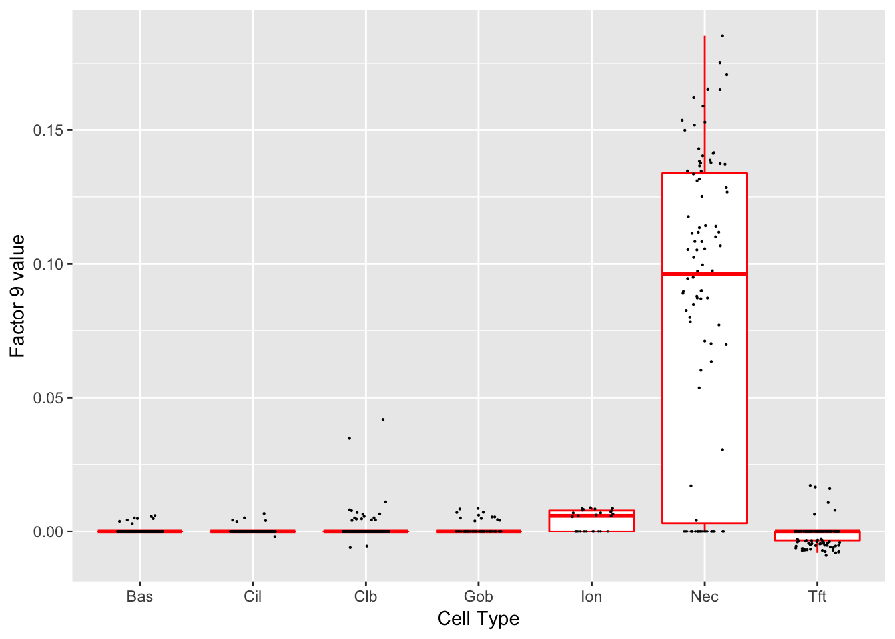
| Version | Author | Date |
|---|---|---|
| f2b86c1 | Jason Willwerscheid | 2018-12-05 |
Significant genes that are also mentioned in the paper:
| gene | type | t.val | |
|---|---|---|---|
| 2 | Ascl1 | NEC | 14.57633 |
| 54 | Chga | NEC (Marker) | 45.57047 |
Gene Ontology terms:
| GO.ID | Term | Annotated | Significant | Expected | classic |
|---|---|---|---|---|---|
| GO:0050877 | nervous system process | 698 | 28 | 6.72 | 1.1e-10 |
| GO:0003008 | system process | 1209 | 37 | 11.63 | 1.7e-10 |
| GO:0007610 | behavior | 526 | 24 | 5.06 | 2.1e-10 |
| GO:0099504 | synaptic vesicle cycle | 113 | 11 | 1.09 | 1.1e-08 |
| GO:0007268 | chemical synaptic transmission | 471 | 20 | 4.53 | 2.6e-08 |
| GO:0098916 | anterograde trans-synaptic signaling | 471 | 20 | 4.53 | 2.6e-08 |
| GO:0099537 | trans-synaptic signaling | 472 | 20 | 4.54 | 2.7e-08 |
| GO:0099536 | synaptic signaling | 473 | 20 | 4.55 | 2.8e-08 |
| GO:0050804 | modulation of chemical synaptic transmis… | 300 | 16 | 2.89 | 3.2e-08 |
| GO:0006812 | cation transport | 840 | 26 | 8.08 | 1.1e-07 |
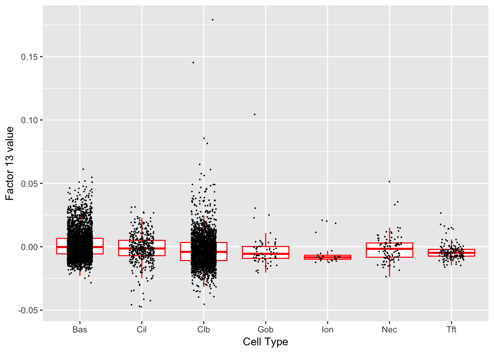
| Version | Author | Date |
|---|---|---|
| f2b86c1 | Jason Willwerscheid | 2018-12-05 |
Significant genes that are also mentioned in the paper:
| gene | type | t.val | |
|---|---|---|---|
| 1 | Nfia | Club | 5.591073 |
| 39 | Aqp3 | Basal (Marker) | 7.844628 |
| 41 | Dapl1 | Basal (Marker) | 6.546861 |
| 46 | Cyp2f2 | Club (Marker) | 10.639600 |
| 48 | Cbr2 | Club (Marker) | 5.402642 |
Gene Ontology terms:
| GO.ID | Term | Annotated | Significant | Expected | classic |
|---|---|---|---|---|---|
| GO:0019886 | antigen processing and presentation of e… | 14 | 4 | 0.08 | 7.9e-07 |
| GO:0002495 | antigen processing and presentation of p… | 18 | 4 | 0.10 | 2.4e-06 |
| GO:0002504 | antigen processing and presentation of p… | 19 | 4 | 0.10 | 3.0e-06 |
| GO:0002478 | antigen processing and presentation of e… | 21 | 4 | 0.11 | 4.6e-06 |
| GO:0019884 | antigen processing and presentation of e… | 26 | 4 | 0.14 | 1.1e-05 |
| GO:0006518 | peptide metabolic process | 682 | 14 | 3.72 | 1.8e-05 |
| GO:0043603 | cellular amide metabolic process | 802 | 14 | 4.37 | 0.00010 |
| GO:0048002 | antigen processing and presentation of p… | 49 | 4 | 0.27 | 0.00014 |
| GO:0009636 | response to toxic substance | 94 | 5 | 0.51 | 0.00016 |
| GO:0002250 | adaptive immune response | 301 | 8 | 1.64 | 0.00023 |
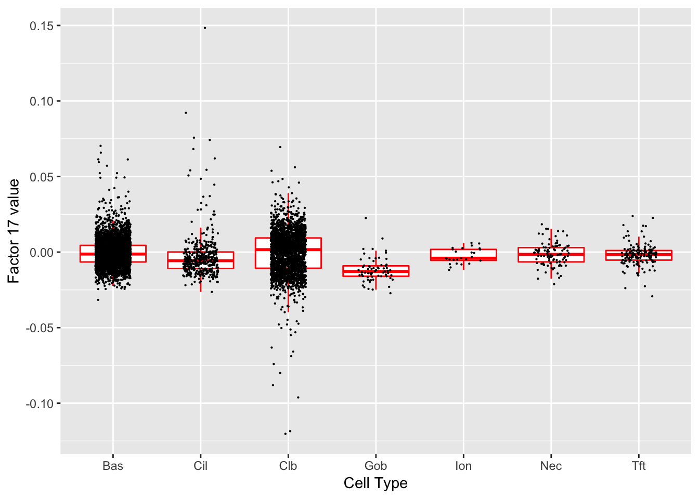
| Version | Author | Date |
|---|---|---|
| f2b86c1 | Jason Willwerscheid | 2018-12-05 |
Gene Ontology terms:
| GO.ID | Term | Annotated | Significant | Expected | classic |
|---|---|---|---|---|---|
| GO:0034213 | quinolinate catabolic process | 1 | 1 | 0.00 | 0.0012 |
| GO:0050976 | detection of mechanical stimulus involve… | 2 | 1 | 0.00 | 0.0023 |
| GO:1904106 | protein localization to microvillus | 2 | 1 | 0.00 | 0.0023 |
| GO:0023041 | neuronal signal transduction | 4 | 1 | 0.00 | 0.0046 |
| GO:0050975 | sensory perception of touch | 4 | 1 | 0.00 | 0.0046 |
| GO:0072526 | pyridine-containing compound catabolic p… | 4 | 1 | 0.00 | 0.0046 |
| GO:1904970 | brush border assembly | 4 | 1 | 0.00 | 0.0046 |
| GO:0002250 | adaptive immune response | 301 | 3 | 0.35 | 0.0047 |
| GO:0009582 | detection of abiotic stimulus | 91 | 2 | 0.11 | 0.0049 |
| GO:0009581 | detection of external stimulus | 92 | 2 | 0.11 | 0.0050 |
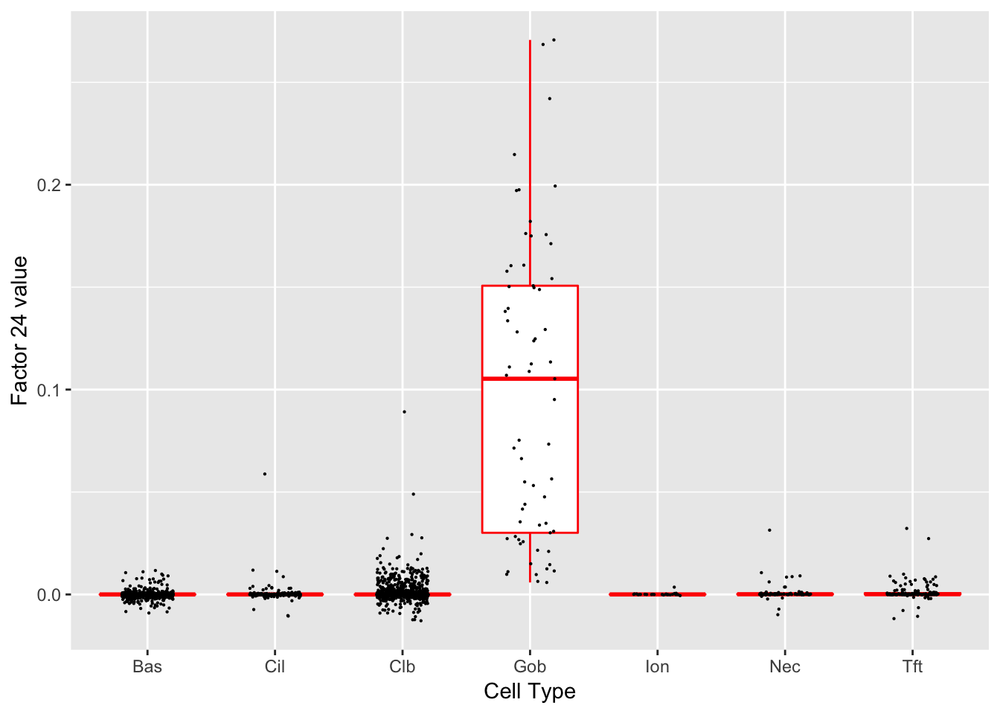
| Version | Author | Date |
|---|---|---|
| f2b86c1 | Jason Willwerscheid | 2018-12-05 |
Significant genes that are also mentioned in the paper:
| gene | type | t.val | |
|---|---|---|---|
| 26 | Sox9 | Tuft-2 | 5.658985 |
| 27 | Gp2 | Goblet | 27.331516 |
| 28 | Tff1 | Goblet-1 | 13.907192 |
| 29 | Tff2 | Goblet-1 | 12.207553 |
| 30 | Lman1l | Goblet-1 | 22.949418 |
| 33 | Dcpp1 | Goblet-2 | 9.848094 |
| 34 | Dcpp2 | Goblet-2 | 10.711118 |
| 35 | Dcpp3 | Goblet-2 | 11.463935 |
Gene Ontology terms:
| GO.ID | Term | Annotated | Significant | Expected | classic |
|---|---|---|---|---|---|
| GO:0019722 | calcium-mediated signaling | 125 | 6 | 0.67 | 5.4e-05 |
| GO:0006884 | cell volume homeostasis | 17 | 3 | 0.09 | 9.4e-05 |
| GO:0019932 | second-messenger-mediated signaling | 207 | 7 | 1.10 | 0.00012 |
| GO:0001580 | detection of chemical stimulus involved … | 19 | 3 | 0.10 | 0.00013 |
| GO:0050913 | sensory perception of bitter taste | 21 | 3 | 0.11 | 0.00018 |
| GO:0050912 | detection of chemical stimulus involved … | 23 | 3 | 0.12 | 0.00024 |
| GO:0030968 | endoplasmic reticulum unfolded protein r… | 60 | 4 | 0.32 | 0.00029 |
| GO:0050907 | detection of chemical stimulus involved … | 26 | 3 | 0.14 | 0.00035 |
| GO:0034620 | cellular response to unfolded protein | 66 | 4 | 0.35 | 0.00042 |
| GO:0032808 | lacrimal gland development | 7 | 2 | 0.04 | 0.00058 |
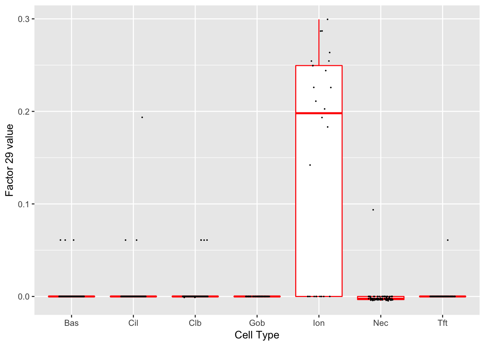
| Version | Author | Date |
|---|---|---|
| f2b86c1 | Jason Willwerscheid | 2018-12-05 |
Significant genes that are also mentioned in the paper:
| gene | type | t.val | |
|---|---|---|---|
| 4 | Ascl3 | Ionocyte | 27.53504 |
| 37 | Atp6v0d2 | Ionocyte | 22.27301 |
| 38 | Cftr | Ionocyte | 17.94190 |
Gene Ontology terms:
| GO.ID | Term | Annotated | Significant | Expected | classic |
|---|---|---|---|---|---|
| GO:0007600 | sensory perception | 382 | 8 | 1.00 | 5.7e-06 |
| GO:0050877 | nervous system process | 698 | 10 | 1.84 | 9.6e-06 |
| GO:0055067 | monovalent inorganic cation homeostasis | 123 | 5 | 0.32 | 1.7e-05 |
| GO:0003008 | system process | 1209 | 12 | 3.18 | 4.3e-05 |
| GO:0006821 | chloride transport | 78 | 4 | 0.21 | 5.1e-05 |
| GO:0007191 | adenylate cyclase-activating dopamine re… | 5 | 2 | 0.01 | 6.7e-05 |
| GO:0030321 | transepithelial chloride transport | 5 | 2 | 0.01 | 6.7e-05 |
| GO:1901617 | organic hydroxy compound biosynthetic pr… | 166 | 5 | 0.44 | 7.1e-05 |
| GO:0030004 | cellular monovalent inorganic cation hom… | 91 | 4 | 0.24 | 9.3e-05 |
| GO:0042421 | norepinephrine biosynthetic process | 6 | 2 | 0.02 | 1e-04 |
sessionInfo()
#> R version 3.4.3 (2017-11-30)
#> Platform: x86_64-apple-darwin15.6.0 (64-bit)
#> Running under: macOS High Sierra 10.13.6
#>
#> Matrix products: default
#> BLAS: /Library/Frameworks/R.framework/Versions/3.4/Resources/lib/libRblas.0.dylib
#> LAPACK: /Library/Frameworks/R.framework/Versions/3.4/Resources/lib/libRlapack.dylib
#>
#> locale:
#> [1] en_US.UTF-8/en_US.UTF-8/en_US.UTF-8/C/en_US.UTF-8/en_US.UTF-8
#>
#> attached base packages:
#> [1] stats4 parallel stats graphics grDevices utils datasets
#> [8] methods base
#>
#> other attached packages:
#> [1] org.Mm.eg.db_3.5.0 topGO_2.30.1 SparseM_1.77
#> [4] GO.db_3.5.0 AnnotationDbi_1.40.0 IRanges_2.12.0
#> [7] S4Vectors_0.16.0 Biobase_2.38.0 graph_1.56.0
#> [10] BiocGenerics_0.24.0 ggplot2_3.1.0
#>
#> loaded via a namespace (and not attached):
#> [1] xfun_0.4 lattice_0.20-35 colorspace_1.3-2
#> [4] htmltools_0.3.6 yaml_2.2.0 blob_1.1.0
#> [7] rlang_0.3.0.1 R.oo_1.21.0 pillar_1.2.1
#> [10] glue_1.3.0 withr_2.1.2.9000 DBI_0.7
#> [13] R.utils_2.6.0 bit64_0.9-7 bindrcpp_0.2
#> [16] matrixStats_0.54.0 bindr_0.1 plyr_1.8.4
#> [19] stringr_1.3.1 munsell_0.5.0 gtable_0.2.0
#> [22] workflowr_1.0.1 flashier_0.1.0 R.methodsS3_1.7.1
#> [25] evaluate_0.12 memoise_1.1.0 labeling_0.3
#> [28] knitr_1.21.6 highr_0.7 Rcpp_1.0.0
#> [31] scales_1.0.0 backports_1.1.2 bit_1.1-12
#> [34] digest_0.6.18 stringi_1.2.4 dplyr_0.7.4
#> [37] grid_3.4.3 rprojroot_1.3-2 tools_3.4.3
#> [40] magrittr_1.5 lazyeval_0.2.1 tibble_1.4.2
#> [43] RSQLite_2.0 whisker_0.3-2 pkgconfig_2.0.1
#> [46] assertthat_0.2.0 rmarkdown_1.11 R6_2.3.0
#> [49] git2r_0.21.0 compiler_3.4.3This reproducible R Markdown analysis was created with workflowr 1.0.1